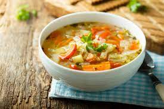

Delightful Soup Recipes

soup is spicy hot and can warm up any cold winter day. Go on and give
it a try this season.
INGREDIENTS
- Onion
- Brown sugar
- Garlic
- Jarred roasted red peppers
- Canned fire-roasted tomatoes
- Stock (chicken or vegetable—either is fine!)
- Red wine vinegar
- Italian seasoning
- Paprika
- Red pepper flakes
INSTRUCTIONS
-
Sauté the onions in oil for a few minutes like you normally would when
you start a soup recipe.
-
Add the garlic, roasted red peppers, roasted tomatoes and stock.
- Bring the soup to a boil, then simmer for 20 minutes.
-
Season! Salt, vinegar, Italian seasoning, paprika and red pepper
flakes. Let the pot simmer for a few more minutes so the flavors meld.
-
Purée! The best way to do this is with an immersion blender, but you
can also do it—very carefully—in a blender. Just work in batches and
be careful with the hot soup.
Home Return to Top